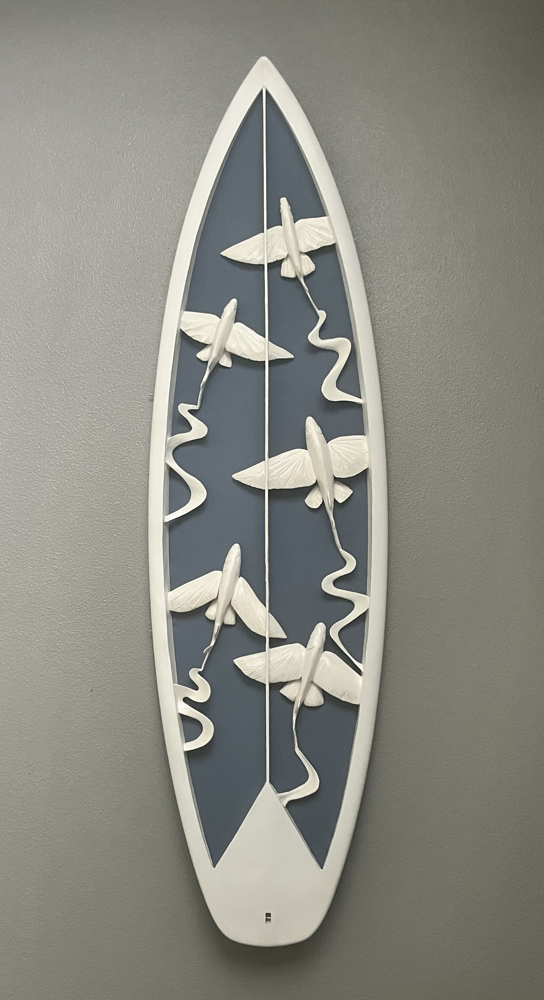
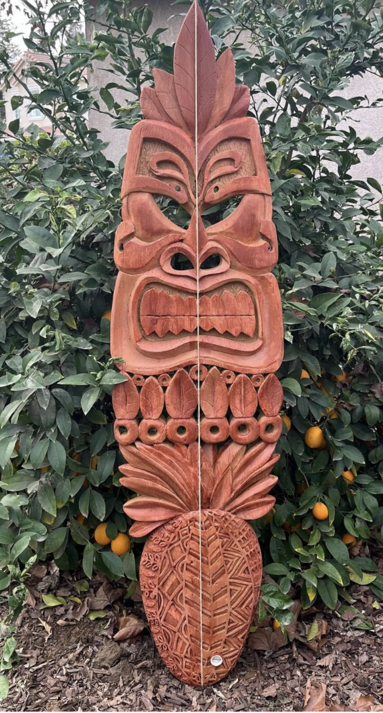
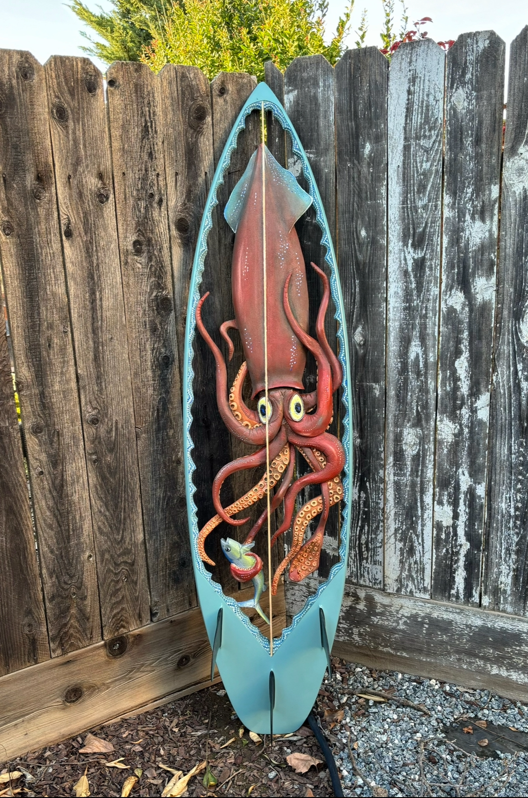
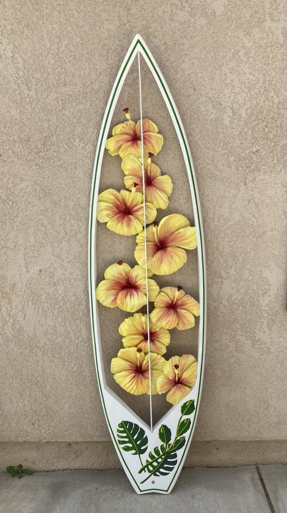
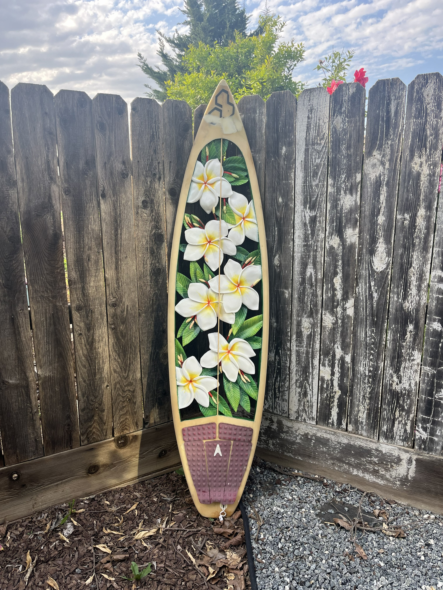

by David McBride
ART FROM THE OCEAN

Original artwork sculpted from the hearts of retired surfboards.
Every surfboard has a story. After years in the ocean, retired boards become the canvas for something new. Each original piece is transformed by hand into one-of-a-kind coastal artwork, preserving a little of its former life while giving it an entirely new purpose.
Figures of strength and protection, carved from surfboards that once found their own strength in the ocean.
Inspired by the creatures, movement and unseen world beneath the waves.
Flowers, landscapes, and natural forms inspired by the beauty of coastal and surf life.
Figures of strength and protection, carved from surfboards that once found their own strength in the ocean.

Exhibited at the California Surf Museum
Surf Art: Exploring Southern California's Coastal Culture, 2025–2026
SOLD
Inspired by the life beneath the surface—fish, predators, and other creatures that inhabit the ocean. These pieces celebrate the beauty, mystery, and constant movement of the world below.
When a surfer dreams of flying, he doesn't dream of soaring through the sky. He dreams of skimming just above the water—weightless, free, touching down only when he needs to.
Exhibited at the Oceanside Museum of Art
Surf Art: Exploring Southern California's Coastal Culture, 2025–2026

Beneath the surface, there is a world we rarely see. Lives are lived, and lives are taken. The ocean can be beautiful, but it is never still.
Inspired by flowers, landscapes, and the natural beauty of coastal life. These pieces celebrate color, growth, and the forms found in nature.

I have always loved flowers, and hibiscus are among my favorites. I chose yellow because it felt bold, fresh and free—the same feeling I wanted this piece to carry.

Heavenly Gift
SOLD
I grew up in a family with six brothers, and we all surfed. I started when I was 12 years old, spending most of my time in the water at Trestles and San Onofre. Surfing and the beach weren't just something we did—they were our lifestyle. And over the years, that lifestyle has become generational in our family.
My career took me farther inland than I ever really wanted to be, but somehow my vacations and time off always seemed to take me back to the beach—and back to two of my brothers who still live there.
The idea of carving surfboards came from my older brother, who is a phenomenal artist in his own right. What started as an idea eventually became something much more personal to me.
I recently retired after a 30-year career in law enforcement. I came out of it without too many dings or scrapes, but I definitely felt well used—in the best possible way.
And that's where I began to see myself in these old surfboards.
They've spent years in the ocean. They've been ridden hard, dinged up, repaired, and eventually retired. I take them, strip away the old fiberglass, clean them up, and uncover what's been underneath the whole time. Then I start carving.
Somewhere along the way, I realized they had become a metaphor for my own life.
Neither one has to be finished just because its first purpose has come to an end.
We can both have a second life.
Interested in a piece, have a question, or want to discuss a custom RecycledSurf creation?
Email: recycledsurfmac@gmail.com
Instagram: @recycledsurf_mcbride